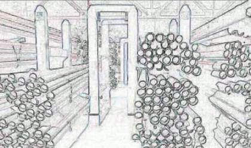

Beim Lagern sind die Verkehrswege freizuhalten (Bild 21-1). Ein Mindestabstand von 0,5 m zu bewegten gleisgebundenen Fahrzeugen oder Kranen ist einzuhalten.

Bild 21-1: Vorbildliche Lagerung in Hürden
Achten Sie darauf, dass Stapel höchstens drei- bis viermal so hoch sind, wie sie breit sind. Wenn möglich, sollen Einzellasten im Verband gestapelt werden.
Besondere Vorsicht und Umsicht ist erforderlich, wenn in Hürden oder zwischen hohen Stapeln gearbeitet werden muss.
Ein zusätzlicher Einweiser muss die Zusammenarbeit zwischen den Beteiligten koordinieren.